A｜精緻像素候選 · 64×64 symbol
較大的輪廓、陰影與局部亮面簇；用 pixelated nearest-neighbor 呈現。
Dewhollow Farm · 同一組 24 格容量與甜蘿蔔詳情，供比較兩種視覺精修方向。場景圖為概念稿；本頁介面是靜態提案，未連接遊戲狀態、操作或正式素材。
VF-02B 記錄像素與繪本風格比較；你已選繪本方向。VF-02C 下方展示六張已核准並整合的透明圖示；場景 B 仍為候選素材。
相同六種物件、相同 3×2 版位、相同暖紙底與深棕框。A 使用較大畫布與清楚的像素明暗簇；B 使用原創繪本手繪筆觸。下方桌機與手機詳情均為靜態候選板，並排比較同一筆甜蘿蔔資料，沒有連接遊戲互動。稍後的 VF-02 場景／背包提案保留原先 superseded 圖示，風格審閱請以本比較板為準。
較大的輪廓、陰影與局部亮面簇；用 pixelated nearest-neighbor 呈現。
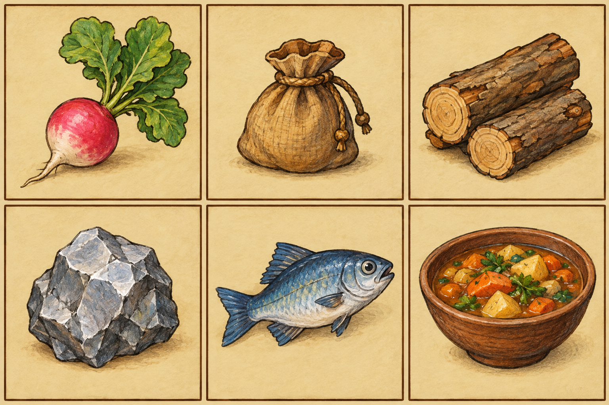
紙感底色、柔和色鉛筆輪廓與手繪材質；保留相同物件順序和格子。
物件順序（左至右、上至下）：甜蘿蔔、種子袋、木材、礦石、魚、料理。此為風格方向比較板；獨立圖示已另外逐檔核准及整合。
下列 A/B 使用相同 SVG 地標、座標與 viewBox="0 0 640 360"；每張以相同 16:9 畫框顯示，沒有各自的 SVG transform、縮放或平移。變更只在 CSS 外觀 tokens、輪廓粗細與同一物件群的陰影。這是鎖定幾何／zoom 的向量視覺研究，不是遊戲 renderer 截圖，也不代表 tile、角色或真實相機已實作。
農地、棚屋、樹、道路與圍欄位置固定；降低草地對比、使用細邊界。
同一地標位置與大小；加深同物件陰影、石框明暗與輪廓，不移動地圖元素。
中央水槽、東西兩間店屋、南北道路及樹池皆固定，中心保持開闊。
沿用 A 的相同幾何，以厚輪廓及近景陰影提高主地標辨識。
保留低層級場景與像素密度，先降低草地重複感、清楚分出田地／道路，再把村莊視線收在中央水槽。此方向已由使用者選擇 B，A 僅保留在受控場景對照中，不作為採用方向。
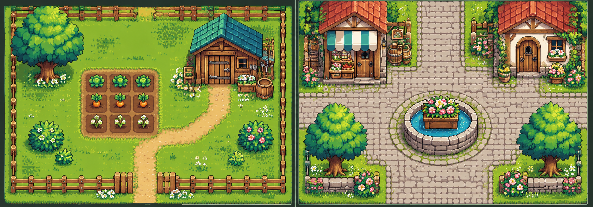
氛圍靈感圖，非受控對照；同幾何 A/B 請看本頁上方的共用 SVG 地圖板。
互動狀態提案：鍵盤方向鍵移動格子、Enter 選取、Tab 操作、Esc 關閉；手機單次點按即可選取，直式可由詳情返回格子，橫式左右並列。真實觸控命中、安全區與 game-input modal lock 尚未測試。
以更明確的近景樹冠、圍籬、石砌高差和建築簷影建立距離；仍留出明確道路與可互動物件輪廓。背包採較厚的木框和內層亮邊。場景方向已選定，場景圖與物品圖示仍需各自審閱核准。
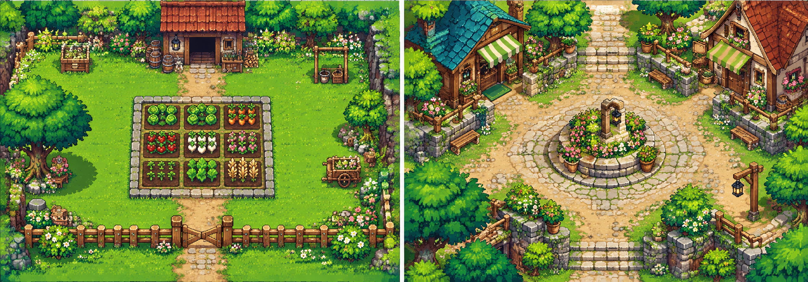
使用者選定的氛圍靈感圖，非受控對照；同幾何 A/B 請看本頁上方的共用 SVG 地圖板。
互動狀態提案與 A 相同；B 的厚框、重陰影會更突出 modal，但也增加手機畫面被 UI 覆蓋的重量。真實觸控命中、安全區、modal lock、鍵盤流程尚未驗證。
使用者已選場景方向 B（層次更強／細節更密）。下列農場與村莊是未核准的視覺候選，只供場景美術比較；相對地標參考上方既有受控地圖研究，不代表實際格子、相機、碰撞或可玩場景。
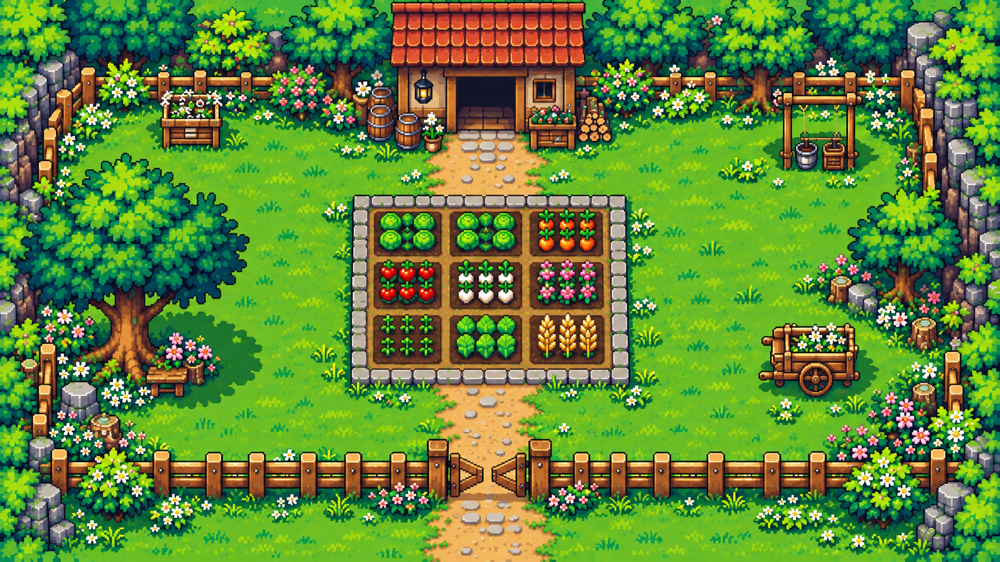
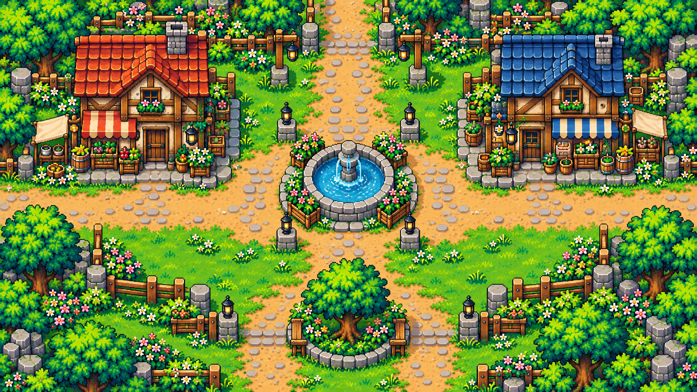
模型／工具未提供可查證名稱與完整授權資訊，正式核准仍須綁定各檔案 SHA-256；詳細來源、alpha 與縮小限制見候選 README。
以下 11 張素材以 64 px 地圖格為基準：地表與單格物件為 128×128（2×），建築與樹為 256×256（2×2 格）。物件保留透明 alpha；四張大型 overlay 以畫布底部中央作錨點。所有素材仍為候選，沒有加入正式素材、地圖或遊戲執行流程。
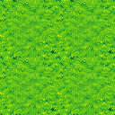
SHA-256 c392ed3eaa096ffec14b2c622f0737852146da5e290f9af021458c7c88f527df
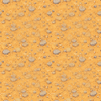
SHA-256 53f82edb07b05e74c3f5de8dbee7a667b0189d50daa0992d6f1770dbb18842e6
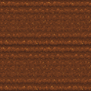
SHA-256 87929b9296e120f0f565a12fedb90bd4a6103d1fca3ea6847722d156fa52011c
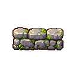
SHA-256 bf8da937dfb069d284197051f8f7dba8ef2163229a2e87f1a821147982bb28b6
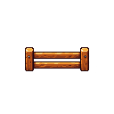
SHA-256 569613d3c4be2c6ca7cf40173e753649c282012f8378f1169d1b74401046ea2c
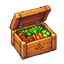
SHA-256 bc1905a68908ff720e0800f9bef5745f28b44ddaef54a08156531c5d9d738035
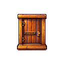
SHA-256 85f5ca05d866e4407d69fdef9e23c437d81996c27734cc35b54f8534edf7a3fd
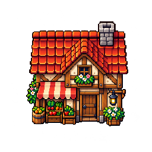
SHA-256 b4236b568a6ac5c6c05a9b4744a92c50fdfe39bc132900a883ca13c6d7aa7f33
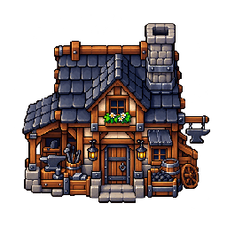
SHA-256 24d378dd0d75eb01573968b9420e81077172a9930026741cbbd2a7ee07d7d410
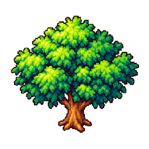
SHA-256 3972b8de6b0aeef93ace94c2c90b5e167206392c8727607b814591477d1cb7ea
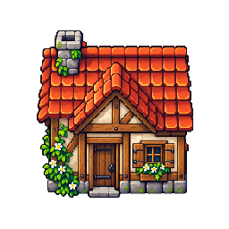
SHA-256 0af23947af0fa9c7c82eb42a8fbacd52ba5f11ceca416257de5081aa52ed58ac
imagegen 工具未提供可查證的模型名稱；地表接縫／縮小讀性、透明 alpha、來源和錨點限制見候選 README。圖板為靜態文件，未執行瀏覽器或 E2E 測試。
依你指定的森林地圖，以已核准的場景 B 只作風格參照。這是候選概念圖，尚未核准，也不是可直接整合的地圖素材。它沒有準確對齊現有 24×16 地圖：只明顯呈現北側林間開口，西側農場出口與東側湖畔出口未對應，地表和透明 overlay 也尚未按 64 px 格子拆分。
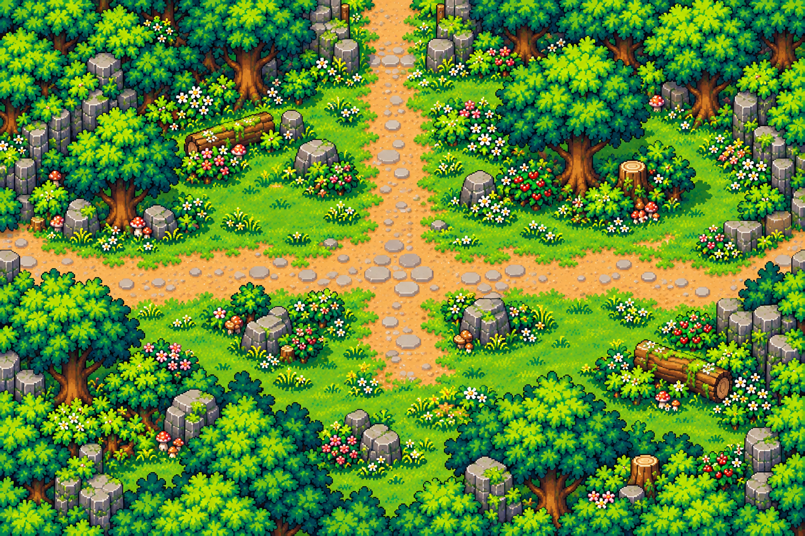
Codex 內建 imagegen；模型名稱與授權條款無法確認。SHA-256 fff15c0284fd650d881037cfe5cc1c54ff1e6c7402b5e2a312581ba573b98139
這組候選以現有森林 24×16 地圖為參考，包含 2× 地表與透明林木／苔岩。它仍未核准進 runtime；接縫混色檢查不等於邊界像素完全相等，地表紋理也偏細密，需在實際攝影機倍率再看辨識度、樹木錨點與遮擋。
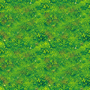
SHA-256 839c2cfd2de5c063a8b12933beffa42f27647381a8b765d90e90ce6c25f1b1c5
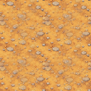
SHA-256 d697f250602cbb1f4f1b2755cce6e58876e451ef977864dbdef47badff09e00e
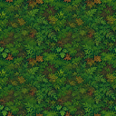
SHA-256 eb2d1e1037ee2d67b4122f05a1845a36c9f9904ede10d72f875698a2b06516f7
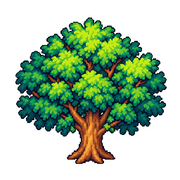
SHA-256 d9a43c1d9a6fa1948dc30e25fb6a164b6578ef207186cf727c0bb22d8f24e10c
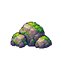
SHA-256 5928ba117c42b5f1b334f93771cf079724452def76f19a9dd8b8295df9363171
候選而且被判定不可直接使用。現有角色是烘焙整張圖，沒有衣物遮罩／圖層；披肩無法可靠貼合四向角色。使用者決定先保留候選與阻礙紀錄，不擴增角色分層或 runtime 換裝。
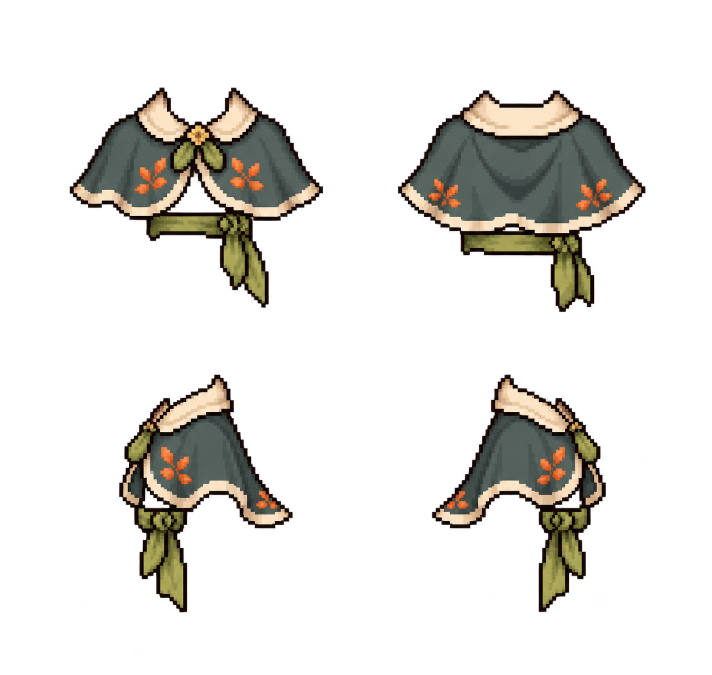
SHA-256 0824412c54e1bc5529a9f86779ad7047117228649c900e308bbf75978fc725a2 · rig 相容性評估與阻礙
資料示例：甜蘿蔔 seedPrice 25、growthDays 3，base sell price = 98；優良品質倍率 125%，sell price = 123。詳情只列已知資料，沒有虛構戰鬥或成長屬性。
原創聲明：場景及像素小圖由本機影像模型生成／手繪 SVG 概念，沒有引用或重畫可辨識既有遊戲 IP。A/B 圖檔 SHA 與限制見同目錄 README。